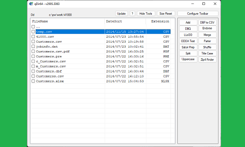
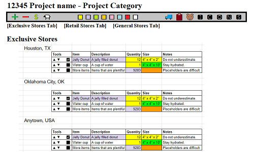
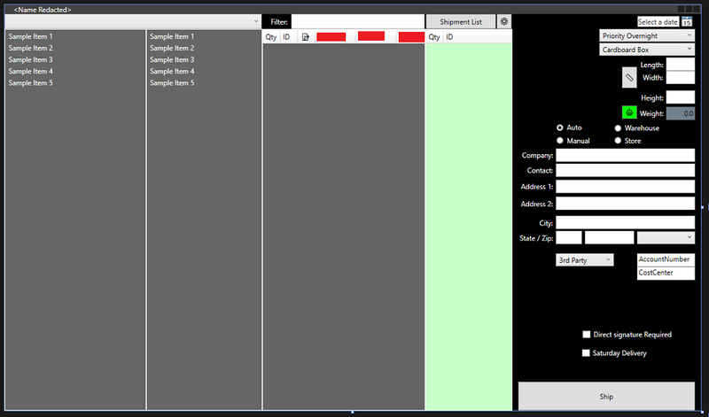

00 · about
I build tools that remove busywork.
And I put AI to work where it actually helps.
I'm a software developer working in core banking: PowerOn on Symitar, SymXchange integrations, internal tools and web apps for front-line staff, containerized and running in production. I've been the driving force behind adopting AI within my team, because I'd rather teach a model the tedious parts than do them by hand again.
Before banking, I kept multi-million-piece mailings moving through print shops and built the tools that ran them, from VB.NET data utilities to a full project-management platform with packing, shipping, and tracking built in. The thread through all of it is simple: I automate the boring, repetitive parts of other people's jobs. The work I'm proudest of saved each project manager roughly three hours a day.
- AI / LLM integration
- PowerOn (Symitar)
- SymXchange
- Docker / Kubernetes
- CI/CD
- Azure Cloud
- PHP
- JavaScript
- C#
- VB.NET
- Python
- SQL (MSSQL / PostgreSQL)
- HTML/CSS
- Excel / VBA
01 · projects
Things I've built.

qDIR64
A modular file and data-list management tool that modernized a 16-bit qBASIC legacy system: keyboard-driven, extensible, built to outlive the software it replaced.

Project Management Tool
A full project-management platform with packing, shipping, and tracking integration that replaced a spreadsheet nightmare. Name redacted, mockup from memory.

Shipping Tool
A FedEx-certified shipping application that completed the loop between packing and project management: thermal labels, scale integration, live package tracking.
* Some projects were built for employers and can't be shared in full. Only descriptions and screenshots. Details below.
02 · experience
Where I've been.
Software Engineer II, Core Banking
WSECU
- Develop and maintain core banking solutions in PowerOn on the Symitar platform: reports, fee postings, and integrations that let other platforms work with the core, spanning loans, shares, and general ledger.
- Build internal tools and web apps for front-line staff, including applications powered by SymXchange.
- Create, deploy, and maintain containerized services (Docker on Kubernetes) with CI/CD pipelines automating delivery.
- Built a PCL-to-PDF/PNG tool to test the PCL files generated by PowerOn before they hit printers.
- Work directly with project managers and business leads to problem-solve and implement solutions, and I've been the driving force behind adopting AI within the team.
- Supporting infrastructure on Microsoft Azure: storage containers, logging, Key Vault, authentication.
Software Development & Logistics Team Leader
Culminate
- Built an integrated software suite handling job workflow from project management to shipping, saving a minimum of 3 hours of labor per project manager, per day.
- Created an API to integrate the work order system with Adobe Creative Suite.
- Local on-site IT for hardware and networking across Linux, Mac, and Windows.
- Processed client mailing lists with VBA scripts in Excel; maintained client design templates in InDesign.
- Managed pickups, quoting, and scheduling for freight and domestic carriers.
Sr. Data Analyst / Systems Administrator
Complemar Partners
- Created a modular file management system for mailing jobs that ran custom Python scripts: data merge, file conversion, deduplication, label layouts, N-up and booklet shuffling.
- Designed a print queue management system for large variable-data jobs to minimize spooling times.
- On-site help desk, server maintenance, and in-house software troubleshooting, including digging into MSSQL tables for the company's pick/pack/ship platform.
- Facilitated local network infrastructure setup and maintenance.
- Saved thousands per year by standardizing desktop printers around cheaper toner.
- Implemented e-waste recycling within the division. HIPAA data handling certified.
Assembly Trainer
Hamilton Medical
- Worked with acting leads to build 3 solid teams for main-line production of life-saving devices.
- Trained others to follow manufacturing process instructions and certified them upon success.
- Learned and mastered assembly of the T1 military-grade transport ventilator.
Shipping / Receiving Clerk
Intuit
- Tracked incoming/outgoing mail and shipping metrics for the tax department.
- Briefly administered the company's shipping platform.
- Performed mass address imports/exports to automate shipping during busy seasons.
- SOX audit compliance.
03 · contact
Say hello.
Best reached on LinkedIn, or by email. I don't have any other social media. That's on purpose.